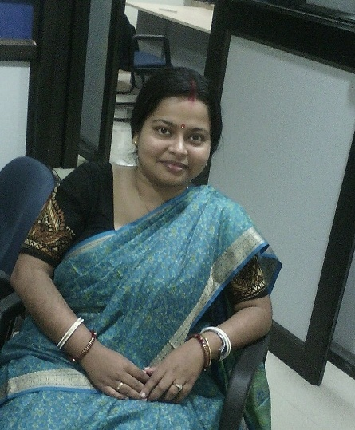
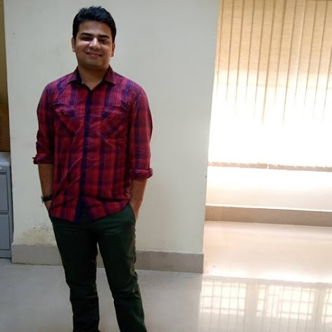
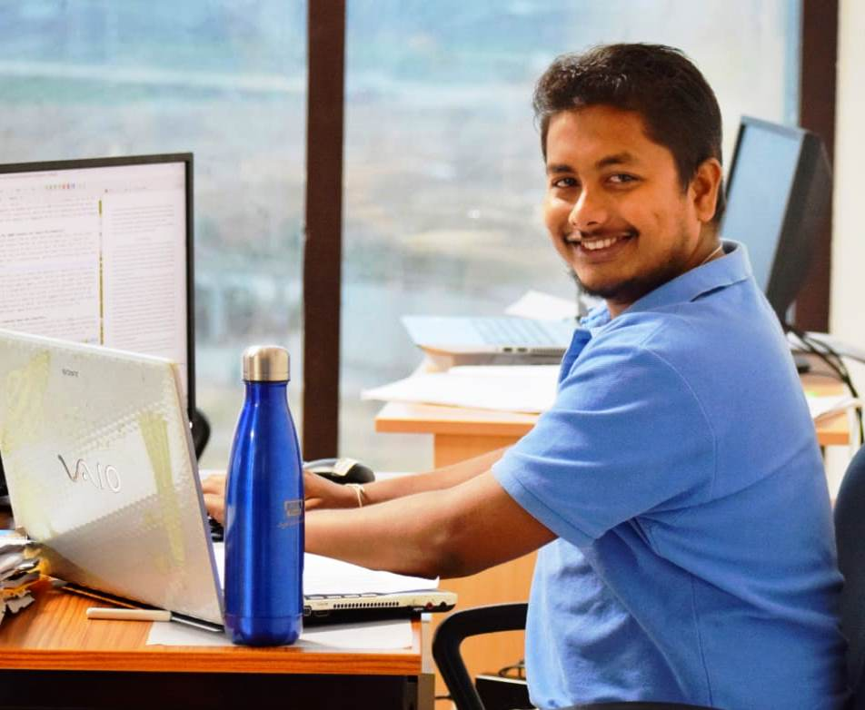

Principal Investigator
Dr. Moumita Roy
Moumita Roy is an Assistant Professor in the Department of Computer Science and Engineering, Indian Institute of Information Technology Guwahati since September 2014. Her current research focus is on machine learning, soft computing, pattern recognition, and remotely sensed image analysis. She has received M.E and Ph.D. degrees in Computer Science and Engineering from IIEST, Shibpur and Jadavpur University, Kolkata (in external collaboration with ISI, Kolkata) in 2009 and 2015, respectively. She has also carried out her research work as a visiting scholar at the University of Trento, Italy from 2013-2014. More information can be found here (Email: moumita2009.roy@gmail.com / moumita@iiitg.ac.in).
Ph.D. Scholars
Shounak Chakraborty
Shounak Chakraborty is a Senior Research Fellow under DST-INSPIRE in the Department of Computer Science and Engineering, IIIT Guwahati. He is currently working towards a PhD thesis titled “Neural approaches towards adaptive land-cover classification using remotely sensed images”. He is interested in research areas like artificial neural networks, remote sensing, pattern recognition and machine learning. More information can be found here (Email: shounakc6@gmail.com / shounak@iiitg.ac.in).

Indrajit Kalita
Indrajit Kalita is a Senior Research Fellow under a SERB project in the Department of Computer Science and Engineering, IIIT Guwahati. He has joined the group as a PhD candidate in July 2017. His major research interests include deep learning, pattern recognition, remote sensing and computer vision. More information can be found here (Email: indrakalita09@gmail.com).
Students working/worked in RSRL Lab
Master's Students
Current M.Tech students
| Name | Project | Year | Current status |
|---|---|---|---|
| Zarana Shah | Age estimation by analyzing facial images | 2019-20 | Student |
| Barsneya Talukdar | Plant disease detection | 2019-20 | Student |
Bachelor Students
Current B.Tech students
| Name | Project | Year | Current status |
|---|---|---|---|
| Nilesh Agarwal | Multilabel land-cover classification using remotely sensed images | 2019-20 | Student |
| Gyan Prakash Singh | Development of deep learning based crop classification (identification) techniques by analysing VHR aerial images | 2019-20 | Student |
| Tala Giridhar Ganseh Reddy | Deep learning based Land-cover classification by analysing multi-temporal Remotely Sensed Images | 2019-20 | Student |
B.Tech Alumni
| Name | Project | Year | Current status |
|---|---|---|---|
| Arvapalli Sai Susmita | Land-cover classification | 2017-18 | Pursuing PhD in IIT Kanpur |
| Anubhav Kesri | Land-cover classification on temporal images using LSTM neural network | 2018-19 | Data Scientist, Exzeo |
| Jayashree Phukan | Handling the class imbalance problem in land-cover classification | 2018-19 | Application Developer, ThoughtWorks |